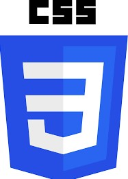
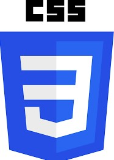
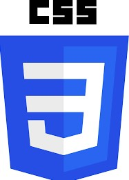

Languages Known


 


What Is a Programmer Portfolio and Do You Need One? A programmer portfolio is more than a simple resume. In essence, it is a showcase that proves that you can do what you talk about in your resume. Rather than telling prospective employers about your skills, you can create a software developer portfolio to show them.
